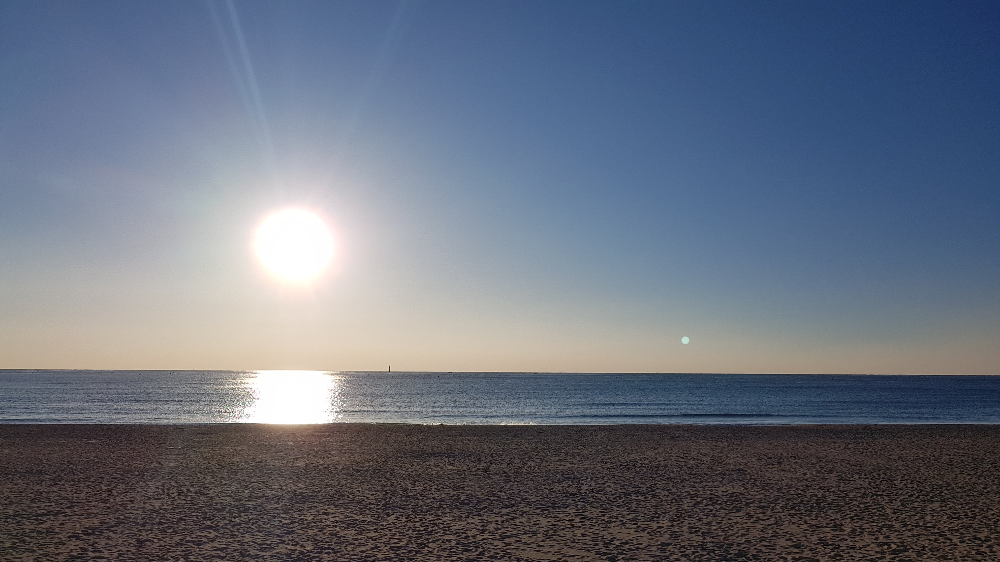
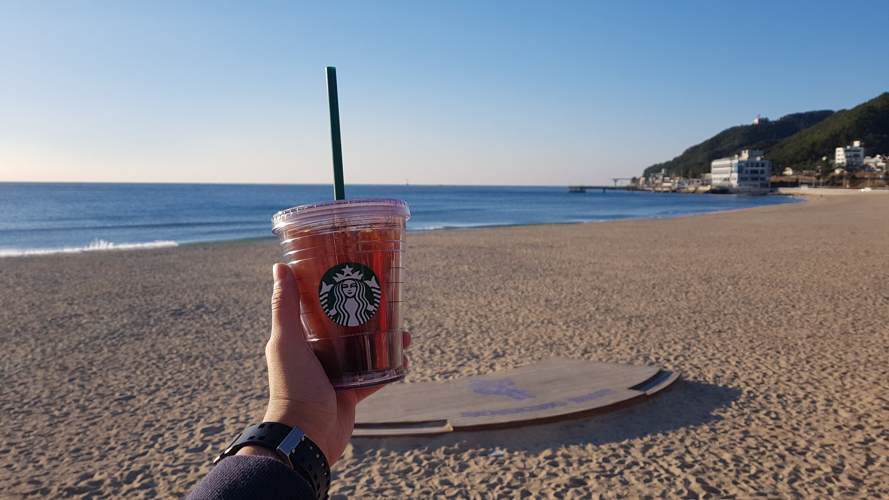
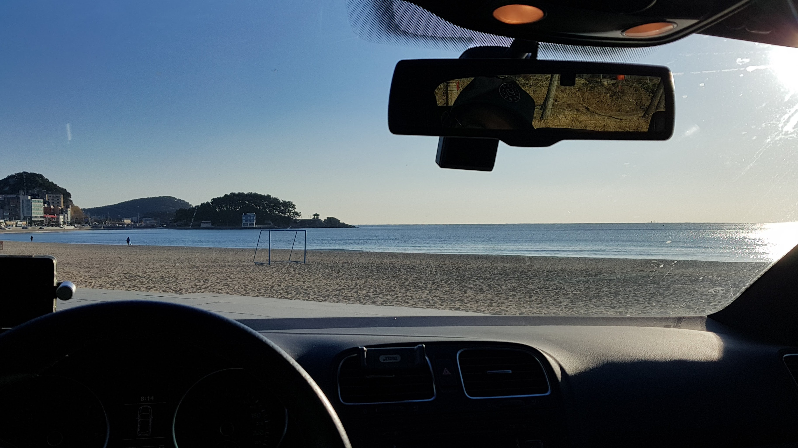
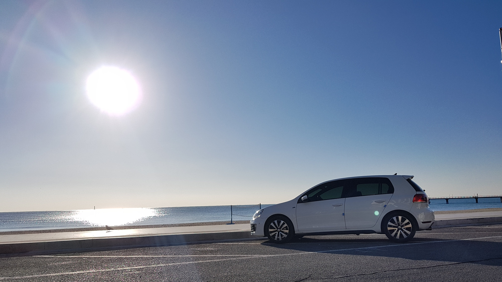

송정 바다를 처음 본게 아마 중학생 무렵이었던 것 같다.
어머니께서 대리고 와주셨는데 그 때 기억이 아직까지도 너무 좋다. 요즘도 부산 내려오면 종종 어머니와 새벽에 송정 바닷가에 들리는데 여기저기 상권이 개발되면서 예전 같은 분위기는 많이 사라졌다. 지금도 해운대에 비하면 조용하지만 그 당시에는 정말 아무것도 없었다.
캄캄한 새벽에 어머니가 운전하는 차를 타고 오면 해변가에는 커피트럭 4~5대 말고는 정말 아무것도 없었는데 커피트럭에서 핫초코와 누네띠네 같은 과자를 사서 차안에서 라디오 틀어놓고 해뜨기를 기다리는 그 시간이 참 좋았다.
그래서 부산을 오면 해운대는 안 가더라도 송정은 꼭 들린다. 송정으로 오는 길은 일부러 달맞이 고개를 넘어 오는데 와인딩 코스로도 좋지만 운전하면서 보이는 바다 경치도 꽤 멋지다.

아무도 없는 겨울바다, 힐링 중

설정 샷
새로생긴 스타벅스에서 아이스 아메리카노 한 잔 사와서 설정샷 남기기. (송정에 스타벅스라니...)하지만 부산 싸나이도 칼바람 맞으면서 아아 마시기란 쉽지 않은 일.. 추운건 추운거고 경치는 예술이다. (원래는 저 뒤에 건물들도 없어야 하는데, 그만 발전 했으면 좋겠다..)

너무 추우니 일단 차 안으로 피신해서 엉뜨 틀어놓고 다시 바다 구경, 불멍보다 매력있는 바다 멍중.

한참을 멍 때리다 떠나기 전에 기념샷 한 장 남기고 자랑하려고 동호회에도 한 장 올렸다.
📝 오랜만에 바다 왔습니다.
기록 끝.